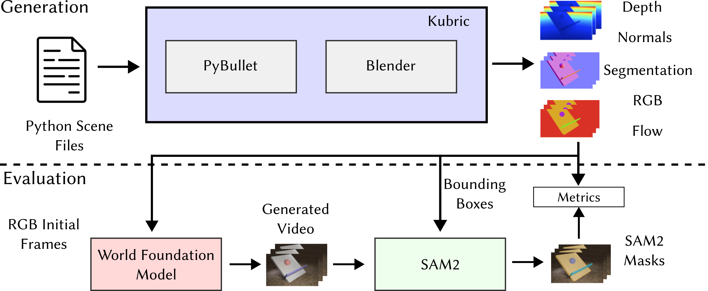
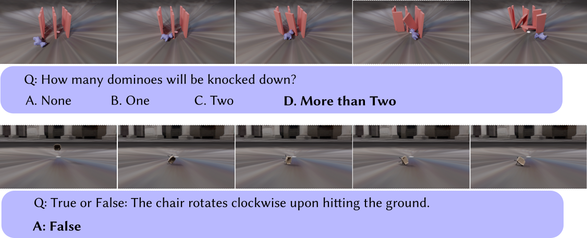
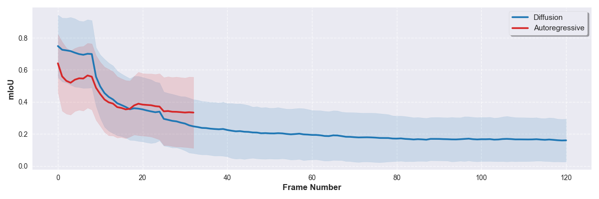

TL;DR: A comprehensive video-based benchmark that directly evaluates world models' ability to predict physical scene evolution across 425 scenarios spanning motion physics, object permanence, support relations, and scale/perspective.

WorldBench Evaluation Framework. Our benchmark directly evaluates world models through video prediction. We provide initial frames to models like Cosmos and task them to generate continuations. The generated videos are then evaluated using segmentation masks from SAM2 compared against ground truth physics simulations, offering detailed assessment of physical understanding beyond simple binary outcomes.
Abstract
Recent advances in world modeling, such as the Cosmos foundation model, highlight the growing need for physically accurate representations of dynamic environments. Despite this ambition, existing evaluation benchmarks fall short of capturing the full complexity of physical interactions, often relying on discrete or binary proxy tasks like object contact prediction. We introduce WorldBench, a new video-based benchmark that directly evaluates a model's ability to predict the evolution of physical scenes over time. Our dataset comprises four physically rich scenarios (motion physics, object permanence, support relations, scale/perspective) with 425 total configurations that assess both visual fidelity and physical plausibility. We additionally add natural language to a subset of this dataset, allowing us to benchmark text-generation models as well. Evaluating on SOTA world foundation models, we find that all configurations lack the physical consistency required to generate reliable real-world interactions. Furthermore, evaluating SOTA vision-language models, we find that the best models perform only slightly better than chance, highlighting a need for better object tracking and temporal consistency.
Benchmark Overview

Support Relations and Object Permanence: Detailed evaluation results showing how different models perform on scenarios involving object stability and occlusion understanding.

Motion Physics and Scale/Perspective: Analysis of model performance on scenarios involving gravity, collision dynamics, and spatial relationship understanding.

Qualitative Examples of the Language-based subset of WorldBench. VLMs are given access to a 9 frame video (same as what is inputted to COSMOS) and ask to answer a True/False or multiple choice question based on the video and future predictions.
 Results
Results
We report evaluation results on WorldBench across world foundation models and vision-language models. Results show significant gaps in physical understanding across all tested models.
World Foundation Models (Video Generation)
| Model | Motion Physics | Object Permanence | Support Relations | Scale/Perspective | Overall mIoU |
|---|---|---|---|---|---|
| Cosmos Autoregressive 5B | 0.2901 | 0.4086 | 0.5446 | 0.4316 | 0.4225 |
| Cosmos Diffusion 7B (33f) | 0.3219 | 0.4747 | 0.4409 | 0.4959 | 0.4508 |
| Cosmos Diffusion 7B (121f) | 0.1696 | 0.3229 | 0.2523 | 0.1615 | 0.2573 |
Vision-Language Models (Text Responses)
| Model | Type | Motion Physics | Object Permanence | Support Relations | Scale/Perspective | Overall Accuracy |
|---|---|---|---|---|---|---|
| Claude Sonnet 4 | Closed | 0.7096 | 0.4286 | 0.4285 | 0.5526 | 0.5027 |
| Gemini 2.5 Pro | Closed | 0.6774 | 0.4048 | 0.5714 | 0.5000 | 0.4972 |
| Gemini 2.5 Flash | Closed | 0.6452 | 0.3571 | 0.4643 | 0.6053 | 0.4751 |
| GPT 4.1 | Closed | 0.3781 | 0.2619 | 0.5000 | 0.5000 | 0.3701 |
| Qwen2.5-VL-32B | Open | 0.8710 | 0.2738 | 0.5714 | 0.4737 | 0.4641 |
| GLM 4.1V 9B | Open | 0.6674 | 0.3453 | 0.6071 | 0.4473 | 0.4641 |
| Qwen2.5-VL-72B | Open | 0.5806 | 0.3333 | 0.5714 | 0.4211 | 0.4309 |
| Qwen2.5-VL-7B | Open | 0.5161 | 0.2381 | 0.5357 | 0.4474 | 0.3737 |
| Mistral Small 3.2 24B | Open | 0.4838 | 0.2500 | 0.3571 | 0.3684 | 0.3315 |
| Llama-3.2-11B-Vision | Open | 0.5161 | 0.1548 | 0.3571 | 0.3421 | 0.2873 |
Open-Source
Proprietary
Performance Over Time

mIoU results over time. The foreground mIoU is inversely related with how far in the future the model is predicting. There is a sharp drop off after frame 9 when the model first begins predicting and this flattens after approx. 30 frames for the diffusion model and 15 frames for the auto-regressive model. The shaded region shows 1 standard deviation.
Key Findings
⚠️ Limited Physical Understanding
Current world foundation models show significant gaps in physics understanding, with the best model achieving only 45% mIoU on our benchmark.
📉 Performance Degrades Over Time
Model accuracy drops sharply after initial frames, with performance inversely correlated to prediction horizon.
🤖 VLMs Struggle with Physics
Vision-language models perform only slightly better than chance on physics reasoning, highlighting fundamental limitations.
🎯 Object Permanence is Hardest
All models struggle most with object permanence scenarios, indicating difficulty with temporal consistency and object tracking.
Methodology
Benchmark Design
WorldBench uses Kubric (PyBullet + Blender) to generate 425 physically accurate video sequences across four categories. Each video is 132 frames long and includes ground truth depth, normals, object segmentations, and optical flow. We evaluate models by comparing generated video segmentations from SAM2 against ground truth physics simulations.
Evaluation Metrics
Foreground mIoU
Measures object tracking accuracy by comparing predicted vs. ground truth segmentation masks using SAM2.
Background RMSE
Evaluates background consistency to ensure models maintain scene coherence during object motion.
Language QA Accuracy
Tests physics reasoning through natural language questions on a subset of 181 videos.
BibTeX
@article{upadhyay2025worldbench,
title={How Close are World Models to the Physical World?},
author={Upadhyay, Rishi and Zhang, Howard and Lu, Zhirong and Sundaram, Lakshman and Agrawal, Ayush and Wu, Yilin and Ba, Yunhao and Wong, Alex and de Melo, Celso M and Kadambi, Achuta},
journal={arXiv preprint arXiv:2501.xxxxx},
year={2025}
}